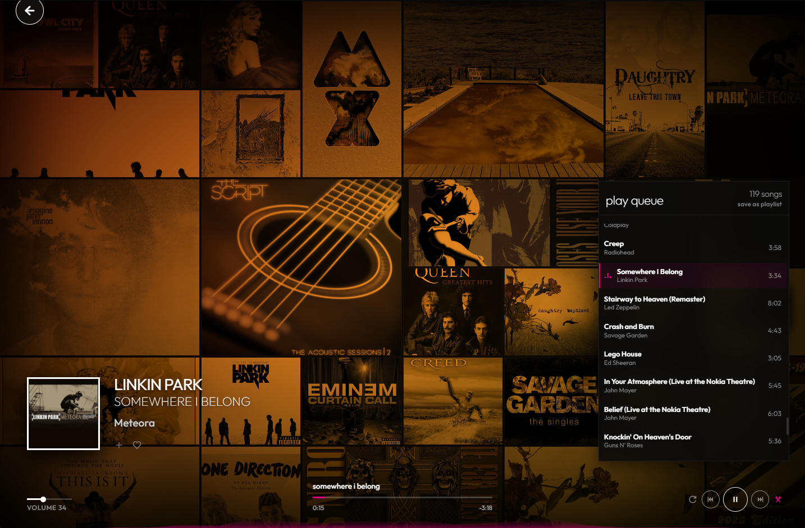

now playing, the way it should be
A full-screen mosaic of your album art flips and shifts while the music plays, with big type and a live visualizer. Exactly the Zune moment you remember.
free & open source desktop app
Zunify brings back the Zune's Metro soul: big type, bold colour, and a gorgeous full-screen Now Playing. It plays the music already on your computer. No accounts, no streaming, no tracking.
Windows 10/11 · macOS 11+ (Apple Silicon & Intel) · Linux AppImage & .deb

features
A full-screen mosaic of your album art flips and shifts while the music plays, with big type and a live visualizer. Exactly the Zune moment you remember.
No account, no cloud, no telemetry. Your library and listening history live in a local database on your machine.
FLAC, WAV, MP3, M4A, AAC and OGG, with tags and embedded cover art read straight from your files.
Browse artists, albums and songs side by side with pivot navigation, quick sorting and instant search. Point it at your music folders and it indexes everything.
Favourite tracks, build and reorder playlists with drag & drop, or save the play queue in one click.
Frameless window, hardware media keys, OS media controls, and playback that keeps going when it's minimized.
Original, dark or light themes and six classic Zune accents. Try them on this page: tap a colour.
tour

live demo
This is the real Zunify interface running in your browser with a royalty-free demo library. Double-click a song, open Now Playing, change the accent in settings.
The demo uses sample tracks. The desktop app plays your own library from disk.
download
Free forever. Pick your platform.
SmartScreen warning? Click More info → Run anyway. The app isn't code-signed yet.
"Damaged" or "unidentified developer"? Run xattr -cr /Applications/Zunify.app once.
AppImage: chmod +x it, then run. Ubuntu 22.04+ needs libfuse2.
under the hood